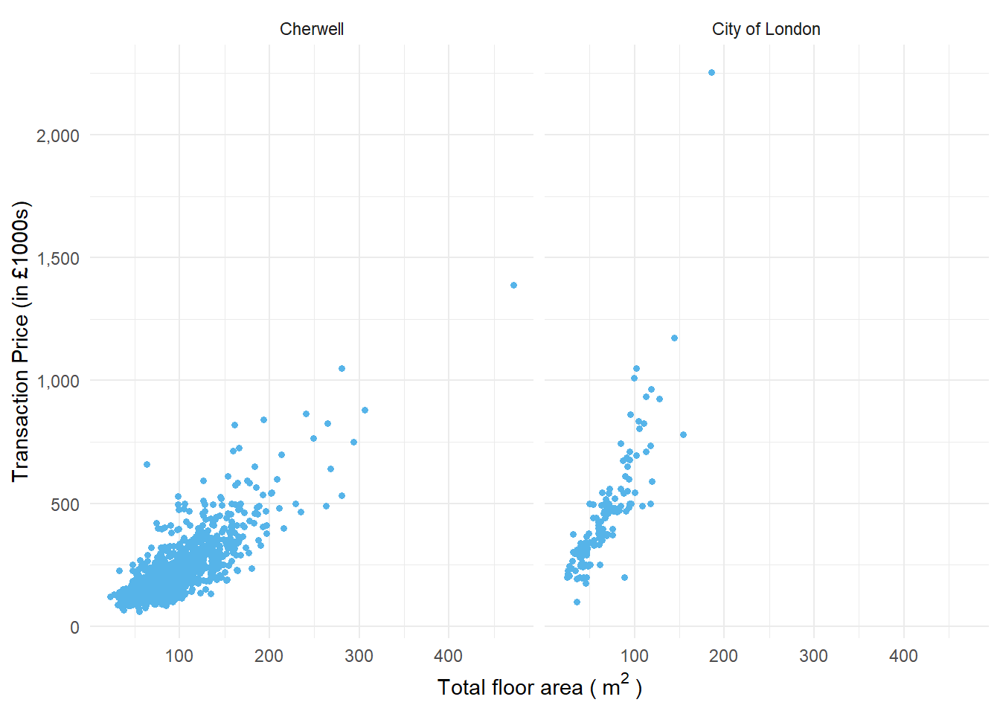
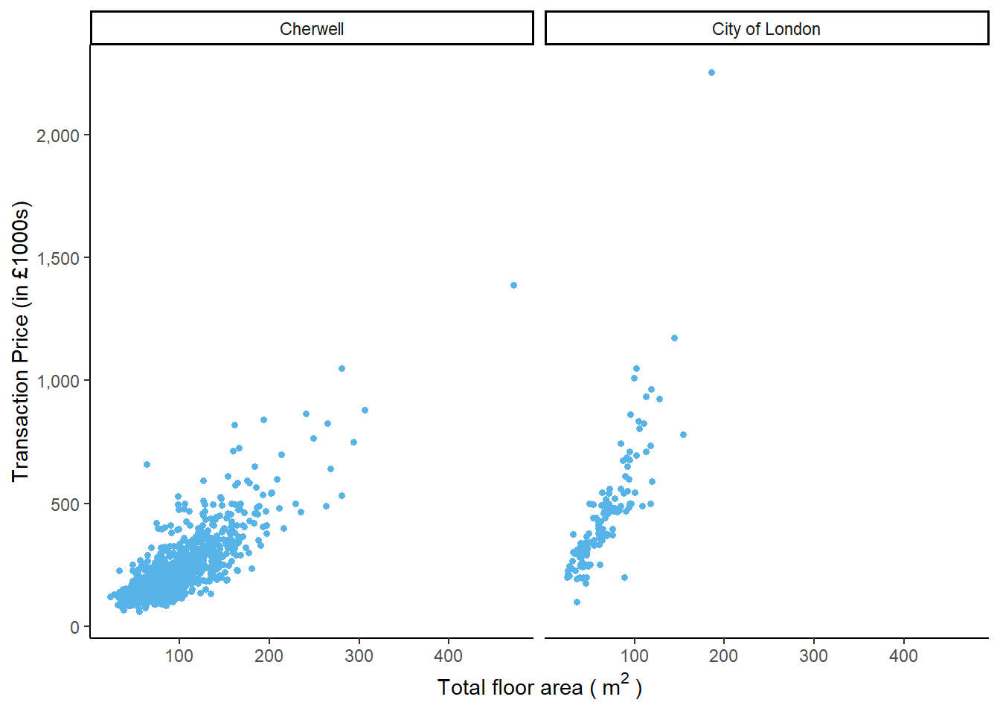
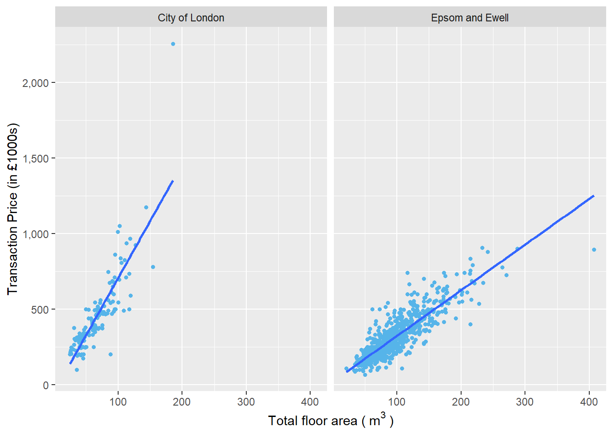
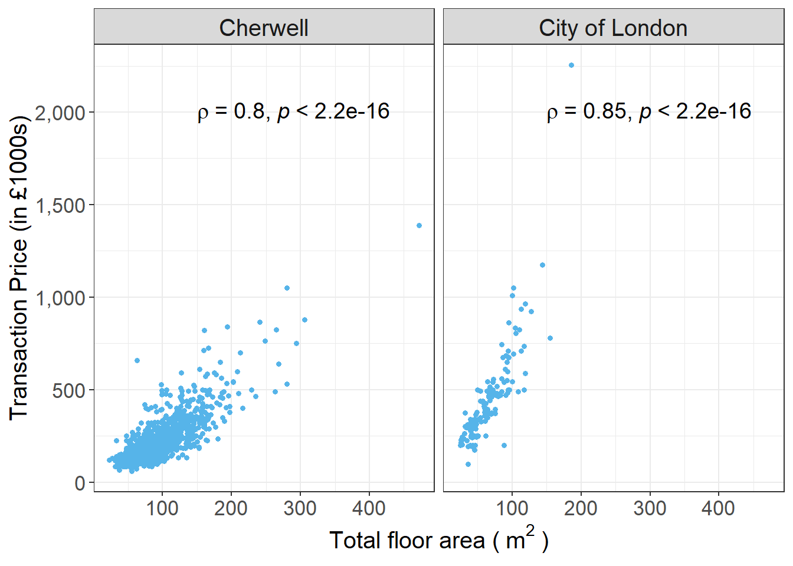
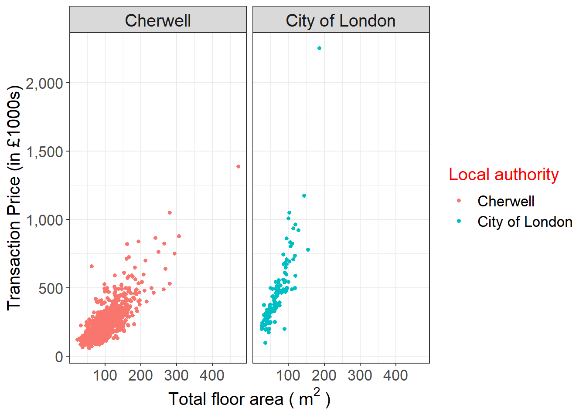
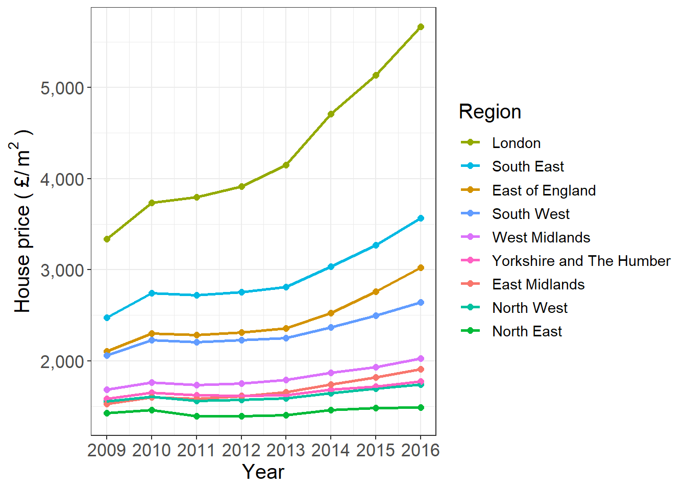

<!DOCTYPE html>
<html lang="" xml:lang="">
<head>

  <meta charset="utf-8" />
  <meta http-equiv="X-UA-Compatible" content="IE=edge" />
  <title>5 Graphics with ggplot2 | Customizing ggplot2 plots in R for scientific research</title>
  <meta name="description" content="5 Graphics with ggplot2 | Customizing ggplot2 plots in R for scientific research" />
  <meta name="generator" content="bookdown 0.21.4 and GitBook 2.6.7" />

  <meta property="og:title" content="5 Graphics with ggplot2 | Customizing ggplot2 plots in R for scientific research" />
  <meta property="og:type" content="book" />
  
  
  
  

  <meta name="twitter:card" content="summary" />
  <meta name="twitter:title" content="5 Graphics with ggplot2 | Customizing ggplot2 plots in R for scientific research" />
  
  
  

<meta name="author" content="Bin Chi" />


  <meta name="viewport" content="width=device-width, initial-scale=1" />
  <meta name="apple-mobile-web-app-capable" content="yes" />
  <meta name="apple-mobile-web-app-status-bar-style" content="black" />
  
  
<link rel="prev" href="getting-started.html"/>
<link rel="next" href="challenge.html"/>
<script src="libs/jquery-2.2.3/jquery.min.js"></script>
<link href="libs/gitbook-2.6.7/css/style.css" rel="stylesheet" />
<link href="libs/gitbook-2.6.7/css/plugin-table.css" rel="stylesheet" />
<link href="libs/gitbook-2.6.7/css/plugin-bookdown.css" rel="stylesheet" />
<link href="libs/gitbook-2.6.7/css/plugin-highlight.css" rel="stylesheet" />
<link href="libs/gitbook-2.6.7/css/plugin-search.css" rel="stylesheet" />
<link href="libs/gitbook-2.6.7/css/plugin-fontsettings.css" rel="stylesheet" />
<link href="libs/gitbook-2.6.7/css/plugin-clipboard.css" rel="stylesheet" />


<script src="libs/accessible-code-block-0.0.1/empty-anchor.js"></script>
<link href="libs/anchor-sections-1.0.1/anchor-sections.css" rel="stylesheet" />
<script src="libs/anchor-sections-1.0.1/anchor-sections.js"></script>


<style type="text/css">
code.sourceCode > span { display: inline-block; line-height: 1.25; }
code.sourceCode > span { color: inherit; text-decoration: inherit; }
code.sourceCode > span:empty { height: 1.2em; }
.sourceCode { overflow: visible; }
code.sourceCode { white-space: pre; position: relative; }
pre.sourceCode { margin: 0; }
@media screen {
div.sourceCode { overflow: auto; }
}
@media print {
code.sourceCode { white-space: pre-wrap; }
code.sourceCode > span { text-indent: -5em; padding-left: 5em; }
}
pre.numberSource code
  { counter-reset: source-line 0; }
pre.numberSource code > span
  { position: relative; left: -4em; counter-increment: source-line; }
pre.numberSource code > span > a:first-child::before
  { content: counter(source-line);
    position: relative; left: -1em; text-align: right; vertical-align: baseline;
    border: none; display: inline-block;
    -webkit-touch-callout: none; -webkit-user-select: none;
    -khtml-user-select: none; -moz-user-select: none;
    -ms-user-select: none; user-select: none;
    padding: 0 4px; width: 4em;
    color: #aaaaaa;
  }
pre.numberSource { margin-left: 3em; border-left: 1px solid #aaaaaa;  padding-left: 4px; }
div.sourceCode
  {   }
@media screen {
code.sourceCode > span > a:first-child::before { text-decoration: underline; }
}
code span.al { color: #ff0000; font-weight: bold; } /* Alert */
code span.an { color: #60a0b0; font-weight: bold; font-style: italic; } /* Annotation */
code span.at { color: #7d9029; } /* Attribute */
code span.bn { color: #40a070; } /* BaseN */
code span.bu { } /* BuiltIn */
code span.cf { color: #007020; font-weight: bold; } /* ControlFlow */
code span.ch { color: #4070a0; } /* Char */
code span.cn { color: #880000; } /* Constant */
code span.co { color: #60a0b0; font-style: italic; } /* Comment */
code span.cv { color: #60a0b0; font-weight: bold; font-style: italic; } /* CommentVar */
code span.do { color: #ba2121; font-style: italic; } /* Documentation */
code span.dt { color: #902000; } /* DataType */
code span.dv { color: #40a070; } /* DecVal */
code span.er { color: #ff0000; font-weight: bold; } /* Error */
code span.ex { } /* Extension */
code span.fl { color: #40a070; } /* Float */
code span.fu { color: #06287e; } /* Function */
code span.im { } /* Import */
code span.in { color: #60a0b0; font-weight: bold; font-style: italic; } /* Information */
code span.kw { color: #007020; font-weight: bold; } /* Keyword */
code span.op { color: #666666; } /* Operator */
code span.ot { color: #007020; } /* Other */
code span.pp { color: #bc7a00; } /* Preprocessor */
code span.sc { color: #4070a0; } /* SpecialChar */
code span.ss { color: #bb6688; } /* SpecialString */
code span.st { color: #4070a0; } /* String */
code span.va { color: #19177c; } /* Variable */
code span.vs { color: #4070a0; } /* VerbatimString */
code span.wa { color: #60a0b0; font-weight: bold; font-style: italic; } /* Warning */
</style>

<link rel="stylesheet" href="style.css" type="text/css" />
</head>

<body>


  <div class="book without-animation with-summary font-size-2 font-family-1" data-basepath=".">

    <div class="book-summary">
      <nav role="navigation">

<ul class="summary">
<li><a href="./">CASA0005 seminar 2</a></li>

<li class="divider"></li>
<li><a href="index.html#section"></a></li>
<li class="chapter" data-level="1" data-path="introduction.html"><a href="introduction.html"><i class="fa fa-check"></i><b>1</b> Introduction</a></li>
<li class="chapter" data-level="2" data-path="recommend-resources.html"><a href="recommend-resources.html"><i class="fa fa-check"></i><b>2</b> Recommend resources</a><ul>
<li class="chapter" data-level="2.1" data-path="recommend-resources.html"><a href="recommend-resources.html#resouces-about-ggplot2-packge"><i class="fa fa-check"></i><b>2.1</b> Resouces about ggplot2 packge</a></li>
<li class="chapter" data-level="2.2" data-path="recommend-resources.html"><a href="recommend-resources.html#resouces-about-graphs-or-data-visualization-in-academic-research"><i class="fa fa-check"></i><b>2.2</b> Resouces about graphs or data visualization in academic research</a></li>
<li class="chapter" data-level="2.3" data-path="recommend-resources.html"><a href="recommend-resources.html#how-to-find-more-useful-resources"><i class="fa fa-check"></i><b>2.3</b> How to find more useful resources</a></li>
</ul></li>
<li class="chapter" data-level="3" data-path="recap.html"><a href="recap.html"><i class="fa fa-check"></i><b>3</b> Recap</a></li>
<li class="chapter" data-level="4" data-path="getting-started.html"><a href="getting-started.html"><i class="fa fa-check"></i><b>4</b> Getting started</a><ul>
<li class="chapter" data-level="4.1" data-path="getting-started.html"><a href="getting-started.html#installing-ggplot2-package"><i class="fa fa-check"></i><b>4.1</b> Installing ggplot2 package</a></li>
<li class="chapter" data-level="4.2" data-path="getting-started.html"><a href="getting-started.html#loading-ggplot2-package"><i class="fa fa-check"></i><b>4.2</b> Loading ggplot2 package</a></li>
<li class="chapter" data-level="4.3" data-path="getting-started.html"><a href="getting-started.html#dataset"><i class="fa fa-check"></i><b>4.3</b> Dataset</a></li>
</ul></li>
<li class="chapter" data-level="5" data-path="graphics-with-ggplot2.html"><a href="graphics-with-ggplot2.html"><i class="fa fa-check"></i><b>5</b> Graphics with ggplot2</a><ul>
<li class="chapter" data-level="5.1" data-path="graphics-with-ggplot2.html"><a href="graphics-with-ggplot2.html#basic-components-of-a-ggplot2-plot"><i class="fa fa-check"></i><b>5.1</b> Basic components of a ggplot2 Plot</a></li>
<li class="chapter" data-level="5.2" data-path="graphics-with-ggplot2.html"><a href="graphics-with-ggplot2.html#building-a-simple-ggplot-plot"><i class="fa fa-check"></i><b>5.2</b> Building a simple ggplot plot</a><ul>
<li class="chapter" data-level="5.2.1" data-path="graphics-with-ggplot2.html"><a href="graphics-with-ggplot2.html#color-the-point"><i class="fa fa-check"></i><b>5.2.1</b> Color the point</a></li>
</ul></li>
<li class="chapter" data-level="5.3" data-path="graphics-with-ggplot2.html"><a href="graphics-with-ggplot2.html#customizing-the-graph"><i class="fa fa-check"></i><b>5.3</b> Customizing the graph</a><ul>
<li class="chapter" data-level="5.3.1" data-path="graphics-with-ggplot2.html"><a href="graphics-with-ggplot2.html#change-the-point-color"><i class="fa fa-check"></i><b>5.3.1</b> Change the point color</a></li>
<li class="chapter" data-level="5.3.2" data-path="graphics-with-ggplot2.html"><a href="graphics-with-ggplot2.html#change-the-point-size"><i class="fa fa-check"></i><b>5.3.2</b> Change the point size</a></li>
<li class="chapter" data-level="5.3.3" data-path="graphics-with-ggplot2.html"><a href="graphics-with-ggplot2.html#change-x-axis-breaks"><i class="fa fa-check"></i><b>5.3.3</b> Change x-axis breaks</a></li>
<li class="chapter" data-level="5.3.4" data-path="graphics-with-ggplot2.html"><a href="graphics-with-ggplot2.html#change-x-axis-breaks-1"><i class="fa fa-check"></i><b>5.3.4</b> Change x-axis breaks</a></li>
<li class="chapter" data-level="5.3.5" data-path="graphics-with-ggplot2.html"><a href="graphics-with-ggplot2.html#change-the-font-size"><i class="fa fa-check"></i><b>5.3.5</b> Change the font size</a></li>
<li class="chapter" data-level="5.3.6" data-path="graphics-with-ggplot2.html"><a href="graphics-with-ggplot2.html#section-2"><i class="fa fa-check"></i><b>5.3.6</b> </a></li>
<li class="chapter" data-level="5.3.7" data-path="graphics-with-ggplot2.html"><a href="graphics-with-ggplot2.html#section-4"><i class="fa fa-check"></i><b>5.3.7</b> </a></li>
<li class="chapter" data-level="5.3.8" data-path="graphics-with-ggplot2.html"><a href="graphics-with-ggplot2.html#change-the-axis-titles"><i class="fa fa-check"></i><b>5.3.8</b> Change the axis titles</a></li>
<li class="chapter" data-level="5.3.9" data-path="graphics-with-ggplot2.html"><a href="graphics-with-ggplot2.html#extensions-to-ggplot2"><i class="fa fa-check"></i><b>5.3.9</b> Extensions to ggplot2</a></li>
<li class="chapter" data-level="5.3.10" data-path="graphics-with-ggplot2.html"><a href="graphics-with-ggplot2.html#section-8"><i class="fa fa-check"></i><b>5.3.10</b> </a></li>
</ul></li>
<li class="chapter" data-level="5.4" data-path="graphics-with-ggplot2.html"><a href="graphics-with-ggplot2.html#sub-and-superscript"><i class="fa fa-check"></i><b>5.4</b> Sub and superscript</a></li>
<li class="chapter" data-level="5.5" data-path="graphics-with-ggplot2.html"><a href="graphics-with-ggplot2.html#saving-graphs"><i class="fa fa-check"></i><b>5.5</b> Saving graphs</a></li>
<li class="chapter" data-level="5.6" data-path="graphics-with-ggplot2.html"><a href="graphics-with-ggplot2.html#sum-up"><i class="fa fa-check"></i><b>5.6</b> Sum up</a></li>
</ul></li>
<li class="chapter" data-level="6" data-path="challenge.html"><a href="challenge.html"><i class="fa fa-check"></i><b>6</b> Challenge</a></li>
<li class="chapter" data-level="7" data-path="answer.html"><a href="answer.html"><i class="fa fa-check"></i><b>7</b> Answer</a></li>
<li class="chapter" data-level="8" data-path="q-a-.html"><a href="q-a-.html"><i class="fa fa-check"></i><b>8</b> Q &amp; A [-]</a></li>
<li class="divider"></li>
<li><a href="https://github.com/rstudio/bookdown" target="blank">Published with bookdown</a></li>
</ul>

      </nav>
    </div>

    <div class="book-body">
      <div class="body-inner">
        <div class="book-header" role="navigation">
          <h1>
            <i class="fa fa-circle-o-notch fa-spin"></i><a href="./">Customizing ggplot2 plots in R for scientific research</a>
          </h1>
        </div>

        <div class="page-wrapper" tabindex="-1" role="main">
          <div class="page-inner">

            <section class="normal" id="section-">
<div id="graphics-with-ggplot2" class="section level1">
<h1><span class="header-section-number">5</span> Graphics with ggplot2</h1>
<div id="basic-components-of-a-ggplot2-plot" class="section level2">
<h2><span class="header-section-number">5.1</span> Basic components of a ggplot2 Plot</h2>
<p>There are two ways to produce plots in ggplot2, one is <code>qplot()</code> and the other is <code>ggplot()</code>. In this seminar we focus on <code>ggplot</code>.</p>
<p><a href="https://rstudio.com/wp-content/uploads/2015/03/ggplot2-cheatsheet.pdf">Data Visualization with ggplot2 Cheat Sheet - RStudio</a></p>
<blockquote>
<p>ggplot2 is based on the grammar of graphics, the idea that you can build every graph from the same few components: a <strong>data</strong> set, a set of <strong>geoms</strong>—visual marks that represent data points, and a coordinate system.</p>
</blockquote>
</div>
<div id="building-a-simple-ggplot-plot" class="section level2">
<h2><span class="header-section-number">5.2</span> Building a simple ggplot plot</h2>
<p>Now let us start with creating a scatter plot using ggplot().The scatter plot is created to exploring the relationship between transaction price and total floor area in two different local authorities.
<br>
### Make sure your object is data fromas
Since ggplot only works with <strong>data</strong> frames, we use <code>is.data.frame()</code>to check the whether the data is a data frame.If it is not, you need to tranfer it to a data frame</p>
<div class="sourceCode" id="cb4"><pre class="sourceCode r"><code class="sourceCode r"><span id="cb4-1"><a href="graphics-with-ggplot2.html#cb4-1"></a><span class="co">#test the data set is a data frame</span></span>
<span id="cb4-2"><a href="graphics-with-ggplot2.html#cb4-2"></a><span class="kw">is.data.frame</span>(housedata1)</span></code></pre></div>
<pre><code>## [1] TRUE</code></pre>
<div class="sourceCode" id="cb6"><pre class="sourceCode r"><code class="sourceCode r"><span id="cb6-1"><a href="graphics-with-ggplot2.html#cb6-1"></a><span class="kw">is.data.frame</span>(housedata2)</span></code></pre></div>
<pre><code>## [1] TRUE</code></pre>
<p><br>
### Plot background and set the x and y axis</p>
<div class="sourceCode" id="cb8"><pre class="sourceCode r"><code class="sourceCode r"><span id="cb8-1"><a href="graphics-with-ggplot2.html#cb8-1"></a><span class="kw">ggplot</span>(housedata1,<span class="kw">aes</span>(<span class="dt">x=</span>tfarea,<span class="dt">y=</span>price))</span></code></pre></div>
<p>
<br>
### Add a layer (point)</p>
<div class="sourceCode" id="cb9"><pre class="sourceCode r"><code class="sourceCode r"><span id="cb9-1"><a href="graphics-with-ggplot2.html#cb9-1"></a><span class="kw">ggplot</span>(housedata1,<span class="kw">aes</span>(<span class="dt">x=</span>tfarea,<span class="dt">y=</span>price))<span class="op">+</span></span>
<span id="cb9-2"><a href="graphics-with-ggplot2.html#cb9-2"></a><span class="st">  </span><span class="kw">geom_point</span>()</span></code></pre></div>
<p></p>
<div id="color-the-point" class="section level3">
<h3><span class="header-section-number">5.2.1</span> Color the point</h3>
<p>In ggplot, we can additional aesthetic values according to other properties from our dataset.Given <em>housedata1</em> records transaction price in two local authorities, we can color the points differently depend on the ldnm field.</p>
<div class="sourceCode" id="cb10"><pre class="sourceCode r"><code class="sourceCode r"><span id="cb10-1"><a href="graphics-with-ggplot2.html#cb10-1"></a><span class="kw">ggplot</span>(housedata1,<span class="kw">aes</span>(<span class="dt">x=</span>tfarea,<span class="dt">y=</span>price))<span class="op">+</span></span>
<span id="cb10-2"><a href="graphics-with-ggplot2.html#cb10-2"></a><span class="st">  </span><span class="kw">geom_point</span>(<span class="kw">aes</span>(<span class="dt">color=</span>ldnm))</span></code></pre></div>
<p>
### Add a linear regression line
To add a linear regression line to a scatter plot, we can do this by adding <code>stat_smooth()</code>,<code>method = lm</code> refers to fit the data linear model function</p>
<div class="sourceCode" id="cb11"><pre class="sourceCode r"><code class="sourceCode r"><span id="cb11-1"><a href="graphics-with-ggplot2.html#cb11-1"></a><span class="kw">ggplot</span>(housedata1,<span class="kw">aes</span>(<span class="dt">x=</span>tfarea,<span class="dt">y=</span>price,<span class="dt">group=</span>ldnm))<span class="op">+</span></span>
<span id="cb11-2"><a href="graphics-with-ggplot2.html#cb11-2"></a><span class="st">  </span><span class="kw">geom_point</span>(<span class="kw">aes</span>(<span class="dt">color=</span>ldnm))<span class="op">+</span></span>
<span id="cb11-3"><a href="graphics-with-ggplot2.html#cb11-3"></a><span class="st">  </span><span class="kw">geom_smooth</span>(<span class="dt">method=</span><span class="st">&quot;lm&quot;</span>)</span></code></pre></div>
<pre><code>## `geom_smooth()` using formula &#39;y ~ x&#39;</code></pre>
<p>
### Split a single plot into many related plots</p>
<p>You can split the scatter plot for each local authority with <code>facet_wrap()</code>.</p>
<div class="sourceCode" id="cb13"><pre class="sourceCode r"><code class="sourceCode r"><span id="cb13-1"><a href="graphics-with-ggplot2.html#cb13-1"></a><span class="kw">ggplot</span>(housedata1,<span class="kw">aes</span>(<span class="dt">x=</span>tfarea,<span class="dt">y=</span>price,<span class="dt">group=</span>ldnm))<span class="op">+</span></span>
<span id="cb13-2"><a href="graphics-with-ggplot2.html#cb13-2"></a><span class="st">  </span><span class="kw">geom_point</span>(<span class="kw">aes</span>(<span class="dt">color=</span>ldnm))<span class="op">+</span></span>
<span id="cb13-3"><a href="graphics-with-ggplot2.html#cb13-3"></a><span class="st">  </span><span class="kw">geom_smooth</span>(<span class="dt">method=</span><span class="st">&quot;lm&quot;</span>)<span class="op">+</span></span>
<span id="cb13-4"><a href="graphics-with-ggplot2.html#cb13-4"></a><span class="st">  </span><span class="kw">facet_wrap</span>(<span class="op">~</span><span class="st"> </span>ldnm)</span></code></pre></div>
<pre><code>## `geom_smooth()` using formula &#39;y ~ x&#39;</code></pre>
<p></p>
</div>
</div>
<div id="customizing-the-graph" class="section level2">
<h2><span class="header-section-number">5.3</span> Customizing the graph</h2>
<div id="change-the-point-color" class="section level3">
<h3><span class="header-section-number">5.3.1</span> Change the point color</h3>
<p>The color of the points can be control with the <code>color</code> aesthetic.Below is the code to color all the points in blue.</p>
<div class="sourceCode" id="cb15"><pre class="sourceCode r"><code class="sourceCode r"><span id="cb15-1"><a href="graphics-with-ggplot2.html#cb15-1"></a><span class="kw">ggplot</span>(housedata1,<span class="kw">aes</span>(<span class="dt">x=</span>tfarea,<span class="dt">y=</span>price,<span class="dt">group=</span>ldnm))<span class="op">+</span></span>
<span id="cb15-2"><a href="graphics-with-ggplot2.html#cb15-2"></a><span class="st">  </span><span class="kw">geom_point</span>(<span class="dt">color=</span><span class="st">&quot;#56b4e9&quot;</span>)<span class="op">+</span></span>
<span id="cb15-3"><a href="graphics-with-ggplot2.html#cb15-3"></a><span class="st">  </span><span class="kw">geom_smooth</span>(<span class="dt">method=</span><span class="st">&quot;lm&quot;</span>)<span class="op">+</span></span>
<span id="cb15-4"><a href="graphics-with-ggplot2.html#cb15-4"></a><span class="st">  </span><span class="kw">facet_wrap</span>(<span class="op">~</span><span class="st"> </span>ldnm)</span></code></pre></div>
<pre><code>## `geom_smooth()` using formula &#39;y ~ x&#39;</code></pre>
<p></p>
</div>
<div id="change-the-point-size" class="section level3">
<h3><span class="header-section-number">5.3.2</span> Change the point size</h3>
<p>The size of the points can be controlled with the <code>size</code> aesthetic. The default value of size is 2. The following code set it to 1.5.</p>
<div class="sourceCode" id="cb17"><pre class="sourceCode r"><code class="sourceCode r"><span id="cb17-1"><a href="graphics-with-ggplot2.html#cb17-1"></a><span class="kw">ggplot</span>(housedata1,<span class="kw">aes</span>(<span class="dt">x=</span>tfarea,<span class="dt">y=</span>price,<span class="dt">group=</span>ldnm))<span class="op">+</span></span>
<span id="cb17-2"><a href="graphics-with-ggplot2.html#cb17-2"></a><span class="st">  </span><span class="kw">geom_point</span>(<span class="dt">color=</span><span class="st">&quot;#56b4e9&quot;</span>,<span class="dt">size =</span> <span class="fl">1.2</span>)<span class="op">+</span></span>
<span id="cb17-3"><a href="graphics-with-ggplot2.html#cb17-3"></a><span class="st">  </span><span class="kw">geom_smooth</span>(<span class="dt">method=</span><span class="st">&quot;lm&quot;</span>)<span class="op">+</span></span>
<span id="cb17-4"><a href="graphics-with-ggplot2.html#cb17-4"></a><span class="st">  </span><span class="kw">facet_wrap</span>(<span class="op">~</span><span class="st"> </span>ldnm)</span></code></pre></div>
<pre><code>## `geom_smooth()` using formula &#39;y ~ x&#39;</code></pre>
<p>
<br>
### Change the point shape
The size of the points can be controlled with the <code>shape</code> aesthetic. The default shape is solid circles and you can change it by accorroding to <a href="https://blog.albertkuo.me/post/point-shape-options-in-ggplot/">Point Shape Options in ggplot</a>. The following code to show you how to plot the point as solid squares.</p>
<div class="sourceCode" id="cb19"><pre class="sourceCode r"><code class="sourceCode r"><span id="cb19-1"><a href="graphics-with-ggplot2.html#cb19-1"></a><span class="kw">ggplot</span>(housedata1,<span class="kw">aes</span>(<span class="dt">x=</span>tfarea,<span class="dt">y=</span>price,<span class="dt">group=</span>ldnm))<span class="op">+</span></span>
<span id="cb19-2"><a href="graphics-with-ggplot2.html#cb19-2"></a><span class="st">  </span><span class="kw">geom_point</span>(<span class="dt">color=</span><span class="st">&quot;#56b4e9&quot;</span>,<span class="dt">size =</span> <span class="fl">1.2</span>, <span class="dt">shape=</span><span class="dv">15</span>)<span class="op">+</span></span>
<span id="cb19-3"><a href="graphics-with-ggplot2.html#cb19-3"></a><span class="st">  </span><span class="kw">geom_smooth</span>(<span class="dt">method=</span><span class="st">&quot;lm&quot;</span>)<span class="op">+</span></span>
<span id="cb19-4"><a href="graphics-with-ggplot2.html#cb19-4"></a><span class="st">  </span><span class="kw">facet_wrap</span>(<span class="op">~</span><span class="st"> </span>ldnm)</span></code></pre></div>
<pre><code>## `geom_smooth()` using formula &#39;y ~ x&#39;</code></pre>
<p>
<br>
### Modify fitted regression lines</p>
<p>The default color of the fit line is blue. This can be change by setting <code>colour</code>,The following code set a red fit line.</p>
<div class="sourceCode" id="cb21"><pre class="sourceCode r"><code class="sourceCode r"><span id="cb21-1"><a href="graphics-with-ggplot2.html#cb21-1"></a><span class="co">#method 1</span></span>
<span id="cb21-2"><a href="graphics-with-ggplot2.html#cb21-2"></a><span class="kw">ggplot</span>(housedata1,<span class="kw">aes</span>(<span class="dt">x=</span>tfarea,<span class="dt">y=</span>price,<span class="dt">group=</span>ldnm))<span class="op">+</span></span>
<span id="cb21-3"><a href="graphics-with-ggplot2.html#cb21-3"></a><span class="st">  </span><span class="kw">geom_point</span>(<span class="dt">color=</span><span class="st">&quot;#56b4e9&quot;</span>,<span class="dt">size =</span> <span class="fl">1.2</span>)<span class="op">+</span></span>
<span id="cb21-4"><a href="graphics-with-ggplot2.html#cb21-4"></a><span class="st">  </span><span class="kw">geom_smooth</span>(<span class="dt">method=</span><span class="st">&quot;lm&quot;</span>,<span class="dt">colour =</span> <span class="st">&quot;red&quot;</span>)<span class="op">+</span></span>
<span id="cb21-5"><a href="graphics-with-ggplot2.html#cb21-5"></a><span class="st">  </span><span class="kw">facet_wrap</span>(<span class="op">~</span><span class="st"> </span>ldnm)</span></code></pre></div>
<pre><code>## `geom_smooth()` using formula &#39;y ~ x&#39;</code></pre>
<p></p>
<div class="sourceCode" id="cb23"><pre class="sourceCode r"><code class="sourceCode r"><span id="cb23-1"><a href="graphics-with-ggplot2.html#cb23-1"></a><span class="co"># method 2</span></span>
<span id="cb23-2"><a href="graphics-with-ggplot2.html#cb23-2"></a><span class="kw">ggplot</span>(housedata1,<span class="kw">aes</span>(<span class="dt">x=</span>tfarea,<span class="dt">y=</span>price,<span class="dt">group=</span>ldnm))<span class="op">+</span></span>
<span id="cb23-3"><a href="graphics-with-ggplot2.html#cb23-3"></a><span class="st">  </span><span class="kw">geom_point</span>(<span class="dt">color=</span><span class="st">&quot;#56b4e9&quot;</span>,<span class="dt">size =</span> <span class="fl">1.2</span>, <span class="dt">shape=</span><span class="dv">15</span>)<span class="op">+</span></span>
<span id="cb23-4"><a href="graphics-with-ggplot2.html#cb23-4"></a><span class="st">  </span><span class="kw">geom_smooth</span>(<span class="dt">method=</span><span class="st">&quot;lm&quot;</span>,<span class="dt">colour =</span> <span class="st">&quot;#FF0000&quot;</span>)<span class="op">+</span></span>
<span id="cb23-5"><a href="graphics-with-ggplot2.html#cb23-5"></a><span class="st">  </span><span class="kw">facet_wrap</span>(<span class="op">~</span><span class="st"> </span>ldnm)</span></code></pre></div>
<pre><code>## `geom_smooth()` using formula &#39;y ~ x&#39;</code></pre>
<p>
The grey area near the fit line is confidence region.you can disabled it with <code>se = FALSE</code></p>
<div class="sourceCode" id="cb25"><pre class="sourceCode r"><code class="sourceCode r"><span id="cb25-1"><a href="graphics-with-ggplot2.html#cb25-1"></a><span class="kw">ggplot</span>(housedata1,<span class="kw">aes</span>(<span class="dt">x=</span>tfarea,<span class="dt">y=</span>price,<span class="dt">group=</span>ldnm))<span class="op">+</span></span>
<span id="cb25-2"><a href="graphics-with-ggplot2.html#cb25-2"></a><span class="st">  </span><span class="kw">geom_point</span>(<span class="dt">color=</span><span class="st">&quot;#56b4e9&quot;</span>,<span class="dt">size =</span> <span class="fl">1.2</span>)<span class="op">+</span></span>
<span id="cb25-3"><a href="graphics-with-ggplot2.html#cb25-3"></a><span class="st">  </span><span class="kw">geom_smooth</span>(<span class="dt">method=</span><span class="st">&quot;lm&quot;</span>,<span class="dt">se =</span> <span class="ot">FALSE</span>)<span class="op">+</span></span>
<span id="cb25-4"><a href="graphics-with-ggplot2.html#cb25-4"></a><span class="st">  </span><span class="kw">facet_wrap</span>(<span class="op">~</span><span class="st"> </span>ldnm)</span></code></pre></div>
<pre><code>## `geom_smooth()` using formula &#39;y ~ x&#39;</code></pre>
<p>
<br>
### Change the axis titles
labs function can be used to change axis labels.Here are two ways to change the axis title.</p>
<div class="sourceCode" id="cb27"><pre class="sourceCode r"><code class="sourceCode r"><span id="cb27-1"><a href="graphics-with-ggplot2.html#cb27-1"></a><span class="co">#Method 1</span></span>
<span id="cb27-2"><a href="graphics-with-ggplot2.html#cb27-2"></a><span class="kw">ggplot</span>(housedata1,<span class="kw">aes</span>(<span class="dt">x=</span>tfarea,<span class="dt">y=</span>price,<span class="dt">group=</span>ldnm))<span class="op">+</span></span>
<span id="cb27-3"><a href="graphics-with-ggplot2.html#cb27-3"></a><span class="st">  </span><span class="kw">geom_point</span>(<span class="dt">color=</span><span class="st">&quot;#56b4e9&quot;</span>,<span class="dt">size =</span> <span class="fl">1.2</span>)<span class="op">+</span></span>
<span id="cb27-4"><a href="graphics-with-ggplot2.html#cb27-4"></a><span class="st">  </span><span class="kw">geom_smooth</span>(<span class="dt">method=</span><span class="st">&quot;lm&quot;</span>,<span class="dt">se =</span> <span class="ot">FALSE</span>)<span class="op">+</span></span>
<span id="cb27-5"><a href="graphics-with-ggplot2.html#cb27-5"></a><span class="st">  </span><span class="kw">facet_wrap</span>(<span class="op">~</span><span class="st"> </span>ldnm)<span class="op">+</span></span>
<span id="cb27-6"><a href="graphics-with-ggplot2.html#cb27-6"></a><span class="st">  </span><span class="kw">labs</span>(<span class="dt">x =</span> <span class="st">&quot;Total floor area&quot;</span>, <span class="dt">y =</span> <span class="st">&quot;Transaction price&quot;</span>)</span></code></pre></div>
<pre><code>## `geom_smooth()` using formula &#39;y ~ x&#39;</code></pre>
<p></p>
<div class="sourceCode" id="cb29"><pre class="sourceCode r"><code class="sourceCode r"><span id="cb29-1"><a href="graphics-with-ggplot2.html#cb29-1"></a><span class="co">#Method 2</span></span>
<span id="cb29-2"><a href="graphics-with-ggplot2.html#cb29-2"></a><span class="kw">ggplot</span>(housedata1,<span class="kw">aes</span>(<span class="dt">x=</span>tfarea,<span class="dt">y=</span>price,<span class="dt">group=</span>ldnm))<span class="op">+</span></span>
<span id="cb29-3"><a href="graphics-with-ggplot2.html#cb29-3"></a><span class="st">  </span><span class="kw">geom_point</span>(<span class="dt">color=</span><span class="st">&quot;#56b4e9&quot;</span>,<span class="dt">size =</span> <span class="fl">1.2</span>, <span class="dt">shape=</span><span class="dv">15</span>)<span class="op">+</span></span>
<span id="cb29-4"><a href="graphics-with-ggplot2.html#cb29-4"></a><span class="st">  </span><span class="kw">geom_smooth</span>(<span class="dt">method=</span><span class="st">&quot;lm&quot;</span>,<span class="dt">se =</span> <span class="ot">FALSE</span>)<span class="op">+</span></span>
<span id="cb29-5"><a href="graphics-with-ggplot2.html#cb29-5"></a><span class="st">  </span><span class="kw">facet_wrap</span>(<span class="op">~</span><span class="st"> </span>ldnm)<span class="op">+</span></span>
<span id="cb29-6"><a href="graphics-with-ggplot2.html#cb29-6"></a><span class="st">  </span><span class="kw">xlab</span>(<span class="st">&quot;Total floor area&quot;</span>)<span class="op">+</span></span>
<span id="cb29-7"><a href="graphics-with-ggplot2.html#cb29-7"></a><span class="st">  </span><span class="kw">ylab</span>(<span class="st">&quot;Transaction price&quot;</span>)</span></code></pre></div>
<pre><code>## `geom_smooth()` using formula &#39;y ~ x&#39;</code></pre>
<p>
### Add axis units</p>
<div id="formatting-y-axis-and-labels" class="section level4">
<h4><span class="header-section-number">5.3.2.1</span> Formatting y axis and labels</h4>
<p>Below is the code for add in the y axis unit in ggplot().</p>
<div class="sourceCode" id="cb31"><pre class="sourceCode r"><code class="sourceCode r"><span id="cb31-1"><a href="graphics-with-ggplot2.html#cb31-1"></a><span class="kw">ggplot</span>(housedata1,<span class="kw">aes</span>(<span class="dt">x=</span>tfarea,<span class="dt">y=</span>price,<span class="dt">group=</span>ldnm))<span class="op">+</span></span>
<span id="cb31-2"><a href="graphics-with-ggplot2.html#cb31-2"></a><span class="st">  </span><span class="kw">geom_point</span>(<span class="dt">color=</span><span class="st">&quot;#56b4e9&quot;</span>,<span class="dt">size =</span> <span class="fl">1.2</span>)<span class="op">+</span></span>
<span id="cb31-3"><a href="graphics-with-ggplot2.html#cb31-3"></a><span class="st">  </span><span class="kw">geom_smooth</span>(<span class="dt">method=</span><span class="st">&quot;lm&quot;</span>,<span class="dt">se =</span> <span class="ot">FALSE</span>)<span class="op">+</span></span>
<span id="cb31-4"><a href="graphics-with-ggplot2.html#cb31-4"></a><span class="st">  </span><span class="kw">facet_wrap</span>(<span class="op">~</span><span class="st"> </span>ldnm)<span class="op">+</span></span>
<span id="cb31-5"><a href="graphics-with-ggplot2.html#cb31-5"></a><span class="st">  </span><span class="kw">xlab</span>(<span class="st">&quot;Total floor area&quot;</span>)<span class="op">+</span></span>
<span id="cb31-6"><a href="graphics-with-ggplot2.html#cb31-6"></a><span class="st">  </span><span class="kw">ylab</span>(<span class="st">&quot;Transaction price (£)&quot;</span>)</span></code></pre></div>
<pre><code>## `geom_smooth()` using formula &#39;y ~ x&#39;</code></pre>
<p>
<br>
If you want to change scale the y axis in ggplot 2 to thousands, you can use <code>scale_y_continuous</code>.</p>
<div class="sourceCode" id="cb33"><pre class="sourceCode r"><code class="sourceCode r"><span id="cb33-1"><a href="graphics-with-ggplot2.html#cb33-1"></a><span class="kw">ggplot</span>(housedata1,<span class="kw">aes</span>(<span class="dt">x=</span>tfarea,<span class="dt">y=</span>price,<span class="dt">group=</span>ldnm))<span class="op">+</span></span>
<span id="cb33-2"><a href="graphics-with-ggplot2.html#cb33-2"></a><span class="st">  </span><span class="kw">geom_point</span>(<span class="dt">color=</span><span class="st">&quot;#56b4e9&quot;</span>,<span class="dt">size =</span> <span class="fl">1.2</span>)<span class="op">+</span></span>
<span id="cb33-3"><a href="graphics-with-ggplot2.html#cb33-3"></a><span class="st">  </span><span class="kw">geom_smooth</span>(<span class="dt">method=</span><span class="st">&quot;lm&quot;</span>,<span class="dt">se =</span> <span class="ot">FALSE</span>)<span class="op">+</span></span>
<span id="cb33-4"><a href="graphics-with-ggplot2.html#cb33-4"></a><span class="st">  </span><span class="kw">facet_wrap</span>(<span class="op">~</span><span class="st"> </span>ldnm)<span class="op">+</span></span>
<span id="cb33-5"><a href="graphics-with-ggplot2.html#cb33-5"></a><span class="st">  </span><span class="kw">scale_y_continuous</span>(<span class="dt">name =</span> <span class="st">&quot;Transaction Price (in £1000s)&quot;</span>,<span class="dt">labels =</span> <span class="cf">function</span>(y) y <span class="op">/</span><span class="st"> </span><span class="dv">1000</span>)<span class="op">+</span></span>
<span id="cb33-6"><a href="graphics-with-ggplot2.html#cb33-6"></a><span class="st">  </span><span class="kw">xlab</span>(<span class="st">&quot;Total floor area&quot;</span>)</span></code></pre></div>
<pre><code>## `geom_smooth()` using formula &#39;y ~ x&#39;</code></pre>
<p>
<br>
You can also format the y labels more readable, with some common formats in scales package.Below is the code for formatting y labels in comma.</p>
<div class="sourceCode" id="cb35"><pre class="sourceCode r"><code class="sourceCode r"><span id="cb35-1"><a href="graphics-with-ggplot2.html#cb35-1"></a><span class="kw">ggplot</span>(housedata1,<span class="kw">aes</span>(<span class="dt">x=</span>tfarea,<span class="dt">y=</span>price<span class="op">/</span><span class="dv">1000</span>,<span class="dt">group=</span>ldnm))<span class="op">+</span></span>
<span id="cb35-2"><a href="graphics-with-ggplot2.html#cb35-2"></a><span class="st">  </span><span class="kw">geom_point</span>(<span class="dt">color=</span><span class="st">&quot;#56b4e9&quot;</span>,<span class="dt">size =</span> <span class="fl">1.2</span>)<span class="op">+</span></span>
<span id="cb35-3"><a href="graphics-with-ggplot2.html#cb35-3"></a><span class="st">  </span><span class="kw">geom_smooth</span>(<span class="dt">method=</span><span class="st">&quot;lm&quot;</span>,<span class="dt">se =</span> <span class="ot">FALSE</span>)<span class="op">+</span></span>
<span id="cb35-4"><a href="graphics-with-ggplot2.html#cb35-4"></a><span class="st">  </span><span class="kw">facet_wrap</span>(<span class="op">~</span><span class="st"> </span>ldnm)<span class="op">+</span></span>
<span id="cb35-5"><a href="graphics-with-ggplot2.html#cb35-5"></a><span class="st">  </span><span class="kw">scale_y_continuous</span>(<span class="dt">name =</span> <span class="st">&quot;Transaction Price (in £1000s)&quot;</span>,<span class="dt">labels =</span> scales<span class="op">::</span>comma)<span class="op">+</span></span>
<span id="cb35-6"><a href="graphics-with-ggplot2.html#cb35-6"></a><span class="st">  </span><span class="kw">xlab</span>(<span class="st">&quot;Total floor area&quot;</span>)</span></code></pre></div>
<pre><code>## `geom_smooth()` using formula &#39;y ~ x&#39;</code></pre>
<p>
<br><br />
- to transfer y axis to a percentage scale ,you can use <code>scale_y_continuous(labels = scales::percent)' - to display dollars on y axis, you can use</code>scale_y_continuous(labels = scales::dollar)’
- to display euro on y axis, you can use `scale_y_continuous(labels = scales::dollar_format(suffix = “€”, prefix = ""))’
<br>
### Add x axis unit
Below listed two approach to label the math notation in x axis. <a href="https://trinkerrstuff.wordpress.com/2018/03/15/2246/">Math Notation for R Plot Titles: expression, bquote, &amp; Greek Letters</a> offers more ‘bquote’ application in R.</p>
<div class="sourceCode" id="cb37"><pre class="sourceCode r"><code class="sourceCode r"><span id="cb37-1"><a href="graphics-with-ggplot2.html#cb37-1"></a><span class="co">#method 1</span></span>
<span id="cb37-2"><a href="graphics-with-ggplot2.html#cb37-2"></a><span class="kw">ggplot</span>(housedata1,<span class="kw">aes</span>(<span class="dt">x=</span>tfarea,<span class="dt">y=</span>price<span class="op">/</span><span class="dv">1000</span>,<span class="dt">group=</span>ldnm))<span class="op">+</span></span>
<span id="cb37-3"><a href="graphics-with-ggplot2.html#cb37-3"></a><span class="st">  </span><span class="kw">geom_point</span>(<span class="dt">color=</span><span class="st">&quot;#56b4e9&quot;</span>,<span class="dt">size =</span> <span class="fl">1.2</span>)<span class="op">+</span></span>
<span id="cb37-4"><a href="graphics-with-ggplot2.html#cb37-4"></a><span class="st">  </span><span class="kw">geom_smooth</span>(<span class="dt">method=</span><span class="st">&quot;lm&quot;</span>,<span class="dt">se =</span> <span class="ot">FALSE</span>)<span class="op">+</span></span>
<span id="cb37-5"><a href="graphics-with-ggplot2.html#cb37-5"></a><span class="st">  </span><span class="kw">facet_wrap</span>(<span class="op">~</span><span class="st"> </span>ldnm)<span class="op">+</span></span>
<span id="cb37-6"><a href="graphics-with-ggplot2.html#cb37-6"></a><span class="st">  </span><span class="kw">scale_y_continuous</span>(<span class="dt">name =</span> <span class="st">&quot;Transaction Price (in £1000s)&quot;</span>,<span class="dt">labels =</span> scales<span class="op">::</span>comma)<span class="op">+</span></span>
<span id="cb37-7"><a href="graphics-with-ggplot2.html#cb37-7"></a><span class="st">  </span><span class="kw">xlab</span>(<span class="kw">bquote</span>(<span class="st">&quot;Total floor area (&quot;</span> <span class="op">~</span><span class="st"> </span>m<span class="op">^</span><span class="dv">2</span> <span class="op">~</span><span class="st"> &quot;)&quot;</span>))</span></code></pre></div>
<pre><code>## `geom_smooth()` using formula &#39;y ~ x&#39;</code></pre>
<p></p>
<div class="sourceCode" id="cb39"><pre class="sourceCode r"><code class="sourceCode r"><span id="cb39-1"><a href="graphics-with-ggplot2.html#cb39-1"></a><span class="co">#method 2</span></span>
<span id="cb39-2"><a href="graphics-with-ggplot2.html#cb39-2"></a><span class="kw">ggplot</span>(housedata1,<span class="kw">aes</span>(<span class="dt">x=</span>tfarea,<span class="dt">y=</span>price<span class="op">/</span><span class="dv">1000</span>,<span class="dt">group=</span>ldnm))<span class="op">+</span></span>
<span id="cb39-3"><a href="graphics-with-ggplot2.html#cb39-3"></a><span class="st">  </span><span class="kw">geom_point</span>(<span class="dt">color=</span><span class="st">&quot;#56b4e9&quot;</span>,<span class="dt">size =</span> <span class="fl">1.2</span>)<span class="op">+</span></span>
<span id="cb39-4"><a href="graphics-with-ggplot2.html#cb39-4"></a><span class="st">  </span><span class="kw">geom_smooth</span>(<span class="dt">method=</span><span class="st">&quot;lm&quot;</span>,<span class="dt">se =</span> <span class="ot">FALSE</span>)<span class="op">+</span></span>
<span id="cb39-5"><a href="graphics-with-ggplot2.html#cb39-5"></a><span class="st">  </span><span class="kw">facet_wrap</span>(<span class="op">~</span><span class="st"> </span>ldnm)<span class="op">+</span></span>
<span id="cb39-6"><a href="graphics-with-ggplot2.html#cb39-6"></a><span class="st">  </span><span class="kw">scale_y_continuous</span>(<span class="dt">name =</span> <span class="st">&quot;Transaction Price (in £1000s)&quot;</span>,<span class="dt">labels =</span> scales<span class="op">::</span>comma)<span class="op">+</span></span>
<span id="cb39-7"><a href="graphics-with-ggplot2.html#cb39-7"></a><span class="st">  </span><span class="kw">xlab</span>(<span class="kw">expression</span>(<span class="st">&quot;Total floor area (&quot;</span> <span class="op">~</span><span class="st"> </span>m<span class="op">^</span><span class="dv">3</span> <span class="op">~</span><span class="st"> &quot;)&quot;</span>))</span></code></pre></div>
<pre><code>## `geom_smooth()` using formula &#39;y ~ x&#39;</code></pre>
<p>
<br>
### Change x-axis breaks
breaks function can be use to change the x or y axis breaks.</p>
<p>+scale_x_continuous(breaks = c(2009,2010,2011,2012,2013,2014,2015,2016))</p>
<div class="sourceCode" id="cb41"><pre class="sourceCode r"><code class="sourceCode r"><span id="cb41-1"><a href="graphics-with-ggplot2.html#cb41-1"></a><span class="kw">ggplot</span>(housedata1,<span class="kw">aes</span>(<span class="dt">x=</span>tfarea,<span class="dt">y=</span>price<span class="op">/</span><span class="dv">1000</span>,<span class="dt">group=</span>ldnm))<span class="op">+</span></span>
<span id="cb41-2"><a href="graphics-with-ggplot2.html#cb41-2"></a><span class="st">  </span><span class="kw">geom_point</span>(<span class="dt">color=</span><span class="st">&quot;#56b4e9&quot;</span>,<span class="dt">size =</span> <span class="fl">1.2</span>)<span class="op">+</span></span>
<span id="cb41-3"><a href="graphics-with-ggplot2.html#cb41-3"></a><span class="st">  </span><span class="kw">geom_smooth</span>(<span class="dt">method=</span><span class="st">&quot;lm&quot;</span>,<span class="dt">se =</span> <span class="ot">FALSE</span>)<span class="op">+</span></span>
<span id="cb41-4"><a href="graphics-with-ggplot2.html#cb41-4"></a><span class="st">  </span><span class="kw">facet_wrap</span>(<span class="op">~</span><span class="st"> </span>ldnm)<span class="op">+</span></span>
<span id="cb41-5"><a href="graphics-with-ggplot2.html#cb41-5"></a><span class="st">  </span><span class="kw">scale_y_continuous</span>(<span class="dt">name =</span> <span class="st">&quot;Transaction Price (in £1000s)&quot;</span>,<span class="dt">labels =</span> scales<span class="op">::</span>comma)<span class="op">+</span></span>
<span id="cb41-6"><a href="graphics-with-ggplot2.html#cb41-6"></a><span class="st">  </span><span class="kw">xlab</span>(<span class="kw">bquote</span>(<span class="st">&quot;Total floor area (&quot;</span> <span class="op">~</span><span class="st"> </span>m<span class="op">^</span><span class="dv">2</span> <span class="op">~</span><span class="st"> &quot;)&quot;</span>))<span class="op">+</span></span>
<span id="cb41-7"><a href="graphics-with-ggplot2.html#cb41-7"></a><span class="st">  </span><span class="kw">scale_x_continuous</span>(<span class="dt">breaks =</span> <span class="kw">c</span>(<span class="dv">2009</span>,<span class="dv">2010</span>,<span class="dv">2011</span>,<span class="dv">2012</span>,<span class="dv">2013</span>,<span class="dv">2014</span>,<span class="dv">2015</span>,<span class="dv">2016</span>))</span></code></pre></div>
<pre><code>## `geom_smooth()` using formula &#39;y ~ x&#39;</code></pre>
<p></p>
</div>
</div>
<div id="change-x-axis-breaks" class="section level3">
<h3><span class="header-section-number">5.3.3</span> Change x-axis breaks</h3>
</div>
<div id="change-x-axis-breaks-1" class="section level3">
<h3><span class="header-section-number">5.3.4</span> Change x-axis breaks</h3>
<p><br>
### Add in title
YOU can use <code>ggtitle()</code> to add a title in the plot. Below is the code to do so.</p>
<div class="sourceCode" id="cb43"><pre class="sourceCode r"><code class="sourceCode r"><span id="cb43-1"><a href="graphics-with-ggplot2.html#cb43-1"></a><span class="kw">ggplot</span>(housedata1,<span class="kw">aes</span>(<span class="dt">x=</span>tfarea,<span class="dt">y=</span>price<span class="op">/</span><span class="dv">1000</span>,<span class="dt">group=</span>ldnm))<span class="op">+</span></span>
<span id="cb43-2"><a href="graphics-with-ggplot2.html#cb43-2"></a><span class="st">  </span><span class="kw">geom_point</span>(<span class="dt">color=</span><span class="st">&quot;#56b4e9&quot;</span>,<span class="dt">size =</span> <span class="fl">1.2</span>)<span class="op">+</span></span>
<span id="cb43-3"><a href="graphics-with-ggplot2.html#cb43-3"></a><span class="st">  </span><span class="kw">geom_smooth</span>(<span class="dt">method=</span><span class="st">&quot;lm&quot;</span>,<span class="dt">se =</span> <span class="ot">FALSE</span>)<span class="op">+</span></span>
<span id="cb43-4"><a href="graphics-with-ggplot2.html#cb43-4"></a><span class="st">  </span><span class="kw">facet_wrap</span>(<span class="op">~</span><span class="st"> </span>ldnm)<span class="op">+</span></span>
<span id="cb43-5"><a href="graphics-with-ggplot2.html#cb43-5"></a><span class="st">  </span><span class="kw">scale_y_continuous</span>(<span class="dt">name =</span> <span class="st">&quot;Transaction Price (in £1000s)&quot;</span>,<span class="dt">labels =</span> scales<span class="op">::</span>comma)<span class="op">+</span></span>
<span id="cb43-6"><a href="graphics-with-ggplot2.html#cb43-6"></a><span class="st">  </span><span class="kw">xlab</span>(<span class="kw">expression</span>(<span class="st">&quot;Total floor area (&quot;</span> <span class="op">~</span><span class="st"> </span>m<span class="op">^</span><span class="dv">3</span> <span class="op">~</span><span class="st"> &quot;)&quot;</span>))<span class="op">+</span></span>
<span id="cb43-7"><a href="graphics-with-ggplot2.html#cb43-7"></a><span class="st">  </span><span class="kw">ggtitle</span>(<span class="st">&quot;Transaction price against total floor area in local authorities, 2009&quot;</span>)</span></code></pre></div>
<pre><code>## `geom_smooth()` using formula &#39;y ~ x&#39;</code></pre>
<p></p>
<p><br>
### Change themes
There are eight themes can be directlty used to give the plot a sonsistent customized look.<code>theme_grey()</code> is the default ggplot2 theme, you can use <code>theme_bw()</code> to remove it.</p>
<div class="sourceCode" id="cb45"><pre class="sourceCode r"><code class="sourceCode r"><span id="cb45-1"><a href="graphics-with-ggplot2.html#cb45-1"></a><span class="kw">ggplot</span>(housedata1,<span class="kw">aes</span>(<span class="dt">x=</span>tfarea,<span class="dt">y=</span>price<span class="op">/</span><span class="dv">1000</span>,<span class="dt">group=</span>ldnm))<span class="op">+</span></span>
<span id="cb45-2"><a href="graphics-with-ggplot2.html#cb45-2"></a><span class="st">  </span><span class="kw">geom_point</span>(<span class="dt">color=</span><span class="st">&quot;#56b4e9&quot;</span>,<span class="dt">size =</span> <span class="fl">1.2</span>)<span class="op">+</span></span>
<span id="cb45-3"><a href="graphics-with-ggplot2.html#cb45-3"></a><span class="st">  </span><span class="kw">geom_smooth</span>(<span class="dt">method=</span><span class="st">&quot;lm&quot;</span>,<span class="dt">se =</span> <span class="ot">FALSE</span>)<span class="op">+</span></span>
<span id="cb45-4"><a href="graphics-with-ggplot2.html#cb45-4"></a><span class="st">  </span><span class="kw">facet_wrap</span>(<span class="op">~</span><span class="st"> </span>ldnm)<span class="op">+</span></span>
<span id="cb45-5"><a href="graphics-with-ggplot2.html#cb45-5"></a><span class="st">  </span><span class="kw">scale_y_continuous</span>(<span class="dt">name =</span> <span class="st">&quot;Transaction Price (in £1000s)&quot;</span>,<span class="dt">labels =</span> scales<span class="op">::</span>comma)<span class="op">+</span></span>
<span id="cb45-6"><a href="graphics-with-ggplot2.html#cb45-6"></a><span class="st">  </span><span class="kw">xlab</span>(<span class="kw">expression</span>(<span class="st">&quot;Total floor area (&quot;</span> <span class="op">~</span><span class="st"> </span>m<span class="op">^</span><span class="dv">3</span> <span class="op">~</span><span class="st"> &quot;)&quot;</span>))<span class="op">+</span></span>
<span id="cb45-7"><a href="graphics-with-ggplot2.html#cb45-7"></a><span class="st">  </span><span class="kw">ggtitle</span>(<span class="st">&quot;Transaction price against total floor area in local authorities, 2009&quot;</span>)<span class="op">+</span></span>
<span id="cb45-8"><a href="graphics-with-ggplot2.html#cb45-8"></a><span class="st">  </span><span class="kw">theme_bw</span>()</span></code></pre></div>
<pre><code>## `geom_smooth()` using formula &#39;y ~ x&#39;</code></pre>
<p></p>
<p>Blow are listed the other six theme, you can choose one you prefer for your academic writing.</p>
<div class="sourceCode" id="cb47"><pre class="sourceCode r"><code class="sourceCode r"><span id="cb47-1"><a href="graphics-with-ggplot2.html#cb47-1"></a><span class="kw">ggplot</span>(housedata1,<span class="kw">aes</span>(<span class="dt">x=</span>tfarea,<span class="dt">y=</span>price<span class="op">/</span><span class="dv">1000</span>,<span class="dt">group=</span>ldnm))<span class="op">+</span></span>
<span id="cb47-2"><a href="graphics-with-ggplot2.html#cb47-2"></a><span class="st">  </span><span class="kw">geom_point</span>(<span class="dt">color=</span><span class="st">&quot;#56b4e9&quot;</span>,<span class="dt">size =</span> <span class="fl">1.2</span>)<span class="op">+</span></span>
<span id="cb47-3"><a href="graphics-with-ggplot2.html#cb47-3"></a><span class="st">  </span><span class="kw">geom_smooth</span>(<span class="dt">method=</span><span class="st">&quot;lm&quot;</span>,<span class="dt">se =</span> <span class="ot">FALSE</span>)<span class="op">+</span></span>
<span id="cb47-4"><a href="graphics-with-ggplot2.html#cb47-4"></a><span class="st">  </span><span class="kw">facet_wrap</span>(<span class="op">~</span><span class="st"> </span>ldnm)<span class="op">+</span></span>
<span id="cb47-5"><a href="graphics-with-ggplot2.html#cb47-5"></a><span class="st">  </span><span class="kw">scale_y_continuous</span>(<span class="dt">name =</span> <span class="st">&quot;Transaction Price (in £1000s)&quot;</span>,<span class="dt">labels =</span> scales<span class="op">::</span>comma)<span class="op">+</span></span>
<span id="cb47-6"><a href="graphics-with-ggplot2.html#cb47-6"></a><span class="st">  </span><span class="kw">xlab</span>(<span class="kw">expression</span>(<span class="st">&quot;Total floor area (&quot;</span> <span class="op">~</span><span class="st"> </span>m<span class="op">^</span><span class="dv">3</span> <span class="op">~</span><span class="st"> &quot;)&quot;</span>))<span class="op">+</span></span>
<span id="cb47-7"><a href="graphics-with-ggplot2.html#cb47-7"></a><span class="st">  </span><span class="kw">ggtitle</span>(<span class="st">&quot;Transaction price against total floor area in local authorities, 2009&quot;</span>)<span class="op">+</span></span>
<span id="cb47-8"><a href="graphics-with-ggplot2.html#cb47-8"></a><span class="st">   </span><span class="kw">theme_linedraw</span>()</span></code></pre></div>
<pre><code>## `geom_smooth()` using formula &#39;y ~ x&#39;</code></pre>
<p></p>
<div class="sourceCode" id="cb49"><pre class="sourceCode r"><code class="sourceCode r"><span id="cb49-1"><a href="graphics-with-ggplot2.html#cb49-1"></a><span class="kw">ggplot</span>(housedata1,<span class="kw">aes</span>(<span class="dt">x=</span>tfarea,<span class="dt">y=</span>price<span class="op">/</span><span class="dv">1000</span>,<span class="dt">group=</span>ldnm))<span class="op">+</span></span>
<span id="cb49-2"><a href="graphics-with-ggplot2.html#cb49-2"></a><span class="st">  </span><span class="kw">geom_point</span>(<span class="dt">color=</span><span class="st">&quot;#56b4e9&quot;</span>,<span class="dt">size =</span> <span class="fl">1.2</span>)<span class="op">+</span></span>
<span id="cb49-3"><a href="graphics-with-ggplot2.html#cb49-3"></a><span class="st">  </span><span class="kw">geom_smooth</span>(<span class="dt">method=</span><span class="st">&quot;lm&quot;</span>,<span class="dt">se =</span> <span class="ot">FALSE</span>)<span class="op">+</span></span>
<span id="cb49-4"><a href="graphics-with-ggplot2.html#cb49-4"></a><span class="st">  </span><span class="kw">facet_wrap</span>(<span class="op">~</span><span class="st"> </span>ldnm)<span class="op">+</span></span>
<span id="cb49-5"><a href="graphics-with-ggplot2.html#cb49-5"></a><span class="st">  </span><span class="kw">scale_y_continuous</span>(<span class="dt">name =</span> <span class="st">&quot;Transaction Price (in £1000s)&quot;</span>,<span class="dt">labels =</span> scales<span class="op">::</span>comma)<span class="op">+</span></span>
<span id="cb49-6"><a href="graphics-with-ggplot2.html#cb49-6"></a><span class="st">  </span><span class="kw">xlab</span>(<span class="kw">expression</span>(<span class="st">&quot;Total floor area (&quot;</span> <span class="op">~</span><span class="st"> </span>m<span class="op">^</span><span class="dv">3</span> <span class="op">~</span><span class="st"> &quot;)&quot;</span>))<span class="op">+</span></span>
<span id="cb49-7"><a href="graphics-with-ggplot2.html#cb49-7"></a><span class="st">  </span><span class="kw">ggtitle</span>(<span class="st">&quot;Transaction price against total floor area in local authorities, 2009&quot;</span>)<span class="op">+</span></span>
<span id="cb49-8"><a href="graphics-with-ggplot2.html#cb49-8"></a><span class="st">   </span><span class="kw">theme_light</span>()</span></code></pre></div>
<pre><code>## `geom_smooth()` using formula &#39;y ~ x&#39;</code></pre>
<p></p>
<div class="sourceCode" id="cb51"><pre class="sourceCode r"><code class="sourceCode r"><span id="cb51-1"><a href="graphics-with-ggplot2.html#cb51-1"></a><span class="kw">ggplot</span>(housedata1,<span class="kw">aes</span>(<span class="dt">x=</span>tfarea,<span class="dt">y=</span>price<span class="op">/</span><span class="dv">1000</span>,<span class="dt">group=</span>ldnm))<span class="op">+</span></span>
<span id="cb51-2"><a href="graphics-with-ggplot2.html#cb51-2"></a><span class="st">  </span><span class="kw">geom_point</span>(<span class="dt">color=</span><span class="st">&quot;#56b4e9&quot;</span>,<span class="dt">size =</span> <span class="fl">1.2</span>)<span class="op">+</span></span>
<span id="cb51-3"><a href="graphics-with-ggplot2.html#cb51-3"></a><span class="st">  </span><span class="kw">geom_smooth</span>(<span class="dt">method=</span><span class="st">&quot;lm&quot;</span>,<span class="dt">se =</span> <span class="ot">FALSE</span>)<span class="op">+</span></span>
<span id="cb51-4"><a href="graphics-with-ggplot2.html#cb51-4"></a><span class="st">  </span><span class="kw">facet_wrap</span>(<span class="op">~</span><span class="st"> </span>ldnm)<span class="op">+</span></span>
<span id="cb51-5"><a href="graphics-with-ggplot2.html#cb51-5"></a><span class="st">  </span><span class="kw">scale_y_continuous</span>(<span class="dt">name =</span> <span class="st">&quot;Transaction Price (in £1000s)&quot;</span>,<span class="dt">labels =</span> scales<span class="op">::</span>comma)<span class="op">+</span></span>
<span id="cb51-6"><a href="graphics-with-ggplot2.html#cb51-6"></a><span class="st">  </span><span class="kw">xlab</span>(<span class="kw">expression</span>(<span class="st">&quot;Total floor area (&quot;</span> <span class="op">~</span><span class="st"> </span>m<span class="op">^</span><span class="dv">3</span> <span class="op">~</span><span class="st"> &quot;)&quot;</span>))<span class="op">+</span></span>
<span id="cb51-7"><a href="graphics-with-ggplot2.html#cb51-7"></a><span class="st">  </span><span class="kw">ggtitle</span>(<span class="st">&quot;Transaction price against total floor area in local authorities, 2009&quot;</span>)<span class="op">+</span></span>
<span id="cb51-8"><a href="graphics-with-ggplot2.html#cb51-8"></a><span class="st">   </span><span class="kw">theme_dark</span>()</span></code></pre></div>
<pre><code>## `geom_smooth()` using formula &#39;y ~ x&#39;</code></pre>
<p></p>
<div class="sourceCode" id="cb53"><pre class="sourceCode r"><code class="sourceCode r"><span id="cb53-1"><a href="graphics-with-ggplot2.html#cb53-1"></a><span class="kw">ggplot</span>(housedata1,<span class="kw">aes</span>(<span class="dt">x=</span>tfarea,<span class="dt">y=</span>price<span class="op">/</span><span class="dv">1000</span>,<span class="dt">group=</span>ldnm))<span class="op">+</span></span>
<span id="cb53-2"><a href="graphics-with-ggplot2.html#cb53-2"></a><span class="st">  </span><span class="kw">geom_point</span>(<span class="dt">color=</span><span class="st">&quot;#56b4e9&quot;</span>,<span class="dt">size =</span> <span class="fl">1.2</span>)<span class="op">+</span></span>
<span id="cb53-3"><a href="graphics-with-ggplot2.html#cb53-3"></a><span class="st">  </span><span class="kw">geom_smooth</span>(<span class="dt">method=</span><span class="st">&quot;lm&quot;</span>,<span class="dt">se =</span> <span class="ot">FALSE</span>)<span class="op">+</span></span>
<span id="cb53-4"><a href="graphics-with-ggplot2.html#cb53-4"></a><span class="st">  </span><span class="kw">facet_wrap</span>(<span class="op">~</span><span class="st"> </span>ldnm)<span class="op">+</span></span>
<span id="cb53-5"><a href="graphics-with-ggplot2.html#cb53-5"></a><span class="st">  </span><span class="kw">scale_y_continuous</span>(<span class="dt">name =</span> <span class="st">&quot;Transaction Price (in £1000s)&quot;</span>,<span class="dt">labels =</span> scales<span class="op">::</span>comma)<span class="op">+</span></span>
<span id="cb53-6"><a href="graphics-with-ggplot2.html#cb53-6"></a><span class="st">  </span><span class="kw">xlab</span>(<span class="kw">expression</span>(<span class="st">&quot;Total floor area (&quot;</span> <span class="op">~</span><span class="st"> </span>m<span class="op">^</span><span class="dv">3</span> <span class="op">~</span><span class="st"> &quot;)&quot;</span>))<span class="op">+</span></span>
<span id="cb53-7"><a href="graphics-with-ggplot2.html#cb53-7"></a><span class="st">  </span><span class="kw">ggtitle</span>(<span class="st">&quot;Transaction price against total floor area in local authorities, 2009&quot;</span>)<span class="op">+</span></span>
<span id="cb53-8"><a href="graphics-with-ggplot2.html#cb53-8"></a><span class="st">  </span><span class="kw">theme_minimal</span>()</span></code></pre></div>
<pre><code>## `geom_smooth()` using formula &#39;y ~ x&#39;</code></pre>
<p></p>
<div class="sourceCode" id="cb55"><pre class="sourceCode r"><code class="sourceCode r"><span id="cb55-1"><a href="graphics-with-ggplot2.html#cb55-1"></a><span class="kw">ggplot</span>(housedata1,<span class="kw">aes</span>(<span class="dt">x=</span>tfarea,<span class="dt">y=</span>price<span class="op">/</span><span class="dv">1000</span>,<span class="dt">group=</span>ldnm))<span class="op">+</span></span>
<span id="cb55-2"><a href="graphics-with-ggplot2.html#cb55-2"></a><span class="st">  </span><span class="kw">geom_point</span>(<span class="dt">color=</span><span class="st">&quot;#56b4e9&quot;</span>,<span class="dt">size =</span> <span class="fl">1.2</span>)<span class="op">+</span></span>
<span id="cb55-3"><a href="graphics-with-ggplot2.html#cb55-3"></a><span class="st">  </span><span class="kw">geom_smooth</span>(<span class="dt">method=</span><span class="st">&quot;lm&quot;</span>,<span class="dt">se =</span> <span class="ot">FALSE</span>)<span class="op">+</span></span>
<span id="cb55-4"><a href="graphics-with-ggplot2.html#cb55-4"></a><span class="st">  </span><span class="kw">facet_wrap</span>(<span class="op">~</span><span class="st"> </span>ldnm)<span class="op">+</span></span>
<span id="cb55-5"><a href="graphics-with-ggplot2.html#cb55-5"></a><span class="st">  </span><span class="kw">scale_y_continuous</span>(<span class="dt">name =</span> <span class="st">&quot;Transaction Price (in £1000s)&quot;</span>,<span class="dt">labels =</span> scales<span class="op">::</span>comma)<span class="op">+</span></span>
<span id="cb55-6"><a href="graphics-with-ggplot2.html#cb55-6"></a><span class="st">  </span><span class="kw">xlab</span>(<span class="kw">expression</span>(<span class="st">&quot;Total floor area (&quot;</span> <span class="op">~</span><span class="st"> </span>m<span class="op">^</span><span class="dv">3</span> <span class="op">~</span><span class="st"> &quot;)&quot;</span>))<span class="op">+</span></span>
<span id="cb55-7"><a href="graphics-with-ggplot2.html#cb55-7"></a><span class="st">  </span><span class="kw">ggtitle</span>(<span class="st">&quot;Transaction price against total floor area in local authorities, 2009&quot;</span>)<span class="op">+</span></span>
<span id="cb55-8"><a href="graphics-with-ggplot2.html#cb55-8"></a><span class="st">  </span><span class="kw">theme_classic</span>()</span></code></pre></div>
<pre><code>## `geom_smooth()` using formula &#39;y ~ x&#39;</code></pre>
<p></p>
<div class="sourceCode" id="cb57"><pre class="sourceCode r"><code class="sourceCode r"><span id="cb57-1"><a href="graphics-with-ggplot2.html#cb57-1"></a><span class="kw">ggplot</span>(housedata1,<span class="kw">aes</span>(<span class="dt">x=</span>tfarea,<span class="dt">y=</span>price<span class="op">/</span><span class="dv">1000</span>,<span class="dt">group=</span>ldnm))<span class="op">+</span></span>
<span id="cb57-2"><a href="graphics-with-ggplot2.html#cb57-2"></a><span class="st">  </span><span class="kw">geom_point</span>(<span class="dt">color=</span><span class="st">&quot;#56b4e9&quot;</span>,<span class="dt">size =</span> <span class="fl">1.2</span>)<span class="op">+</span></span>
<span id="cb57-3"><a href="graphics-with-ggplot2.html#cb57-3"></a><span class="st">  </span><span class="kw">geom_smooth</span>(<span class="dt">method=</span><span class="st">&quot;lm&quot;</span>,<span class="dt">se =</span> <span class="ot">FALSE</span>)<span class="op">+</span></span>
<span id="cb57-4"><a href="graphics-with-ggplot2.html#cb57-4"></a><span class="st">  </span><span class="kw">facet_wrap</span>(<span class="op">~</span><span class="st"> </span>ldnm)<span class="op">+</span></span>
<span id="cb57-5"><a href="graphics-with-ggplot2.html#cb57-5"></a><span class="st">  </span><span class="kw">scale_y_continuous</span>(<span class="dt">name =</span> <span class="st">&quot;Transaction Price (in £1000s)&quot;</span>,<span class="dt">labels =</span> scales<span class="op">::</span>comma)<span class="op">+</span></span>
<span id="cb57-6"><a href="graphics-with-ggplot2.html#cb57-6"></a><span class="st">  </span><span class="kw">xlab</span>(<span class="kw">expression</span>(<span class="st">&quot;Total floor area (&quot;</span> <span class="op">~</span><span class="st"> </span>m<span class="op">^</span><span class="dv">3</span> <span class="op">~</span><span class="st"> &quot;)&quot;</span>))<span class="op">+</span></span>
<span id="cb57-7"><a href="graphics-with-ggplot2.html#cb57-7"></a><span class="st">  </span><span class="kw">ggtitle</span>(<span class="st">&quot;Transaction price against total floor area in local authorities, 2009&quot;</span>)<span class="op">+</span></span>
<span id="cb57-8"><a href="graphics-with-ggplot2.html#cb57-8"></a><span class="st">  </span><span class="kw">theme_void</span>()</span></code></pre></div>
<pre><code>## `geom_smooth()` using formula &#39;y ~ x&#39;</code></pre>
<p>
<br>
The R package <strong>ggthemes</strong> provides another gallery of custom ggplot themes.You can see detials in <a href="https://yutannihilation.github.io/allYourFigureAreBelongToUs/ggthemes/">package:ggthemes • All Your Figure Are Belong To Us</a>.
<br></p>
</div>
<div id="change-the-font-size" class="section level3">
<h3><span class="header-section-number">5.3.5</span> Change the font size</h3>
<p>You can also manual customize the ggplot by modify the components in <a href="https://ggplot2.tidyverse.org/reference/theme.html">theme()</a>. Below I give a series if example on how to change the font size in the plot, let us do step-by-step.
<br>
(1)</p>
<div class="sourceCode" id="cb59"><pre class="sourceCode r"><code class="sourceCode r"><span id="cb59-1"><a href="graphics-with-ggplot2.html#cb59-1"></a><span class="kw">ggplot</span>(housedata1,<span class="kw">aes</span>(<span class="dt">x=</span>tfarea,<span class="dt">y=</span>price<span class="op">/</span><span class="dv">1000</span>,<span class="dt">group=</span>ldnm))<span class="op">+</span></span>
<span id="cb59-2"><a href="graphics-with-ggplot2.html#cb59-2"></a><span class="st">  </span><span class="kw">geom_point</span>(<span class="dt">color=</span><span class="st">&quot;#56b4e9&quot;</span>,<span class="dt">size =</span> <span class="fl">1.2</span>)<span class="op">+</span></span>
<span id="cb59-3"><a href="graphics-with-ggplot2.html#cb59-3"></a><span class="st">  </span><span class="kw">geom_smooth</span>(<span class="dt">method=</span><span class="st">&quot;lm&quot;</span>,<span class="dt">se =</span> <span class="ot">FALSE</span>)<span class="op">+</span></span>
<span id="cb59-4"><a href="graphics-with-ggplot2.html#cb59-4"></a><span class="st">  </span><span class="kw">facet_wrap</span>(<span class="op">~</span><span class="st"> </span>ldnm)<span class="op">+</span></span>
<span id="cb59-5"><a href="graphics-with-ggplot2.html#cb59-5"></a><span class="st">  </span><span class="kw">scale_y_continuous</span>(<span class="dt">name =</span> <span class="st">&quot;Transaction Price (in £1000s)&quot;</span>,<span class="dt">labels =</span> scales<span class="op">::</span>comma)<span class="op">+</span></span>
<span id="cb59-6"><a href="graphics-with-ggplot2.html#cb59-6"></a><span class="st">  </span><span class="kw">xlab</span>(<span class="kw">expression</span>(<span class="st">&quot;Total floor area (&quot;</span> <span class="op">~</span><span class="st"> </span>m<span class="op">^</span><span class="dv">3</span> <span class="op">~</span><span class="st"> &quot;)&quot;</span>))<span class="op">+</span></span>
<span id="cb59-7"><a href="graphics-with-ggplot2.html#cb59-7"></a><span class="st">  </span><span class="kw">ggtitle</span>(<span class="st">&quot;Transaction price against total floor area in local authorities, 2009&quot;</span>)<span class="op">+</span></span>
<span id="cb59-8"><a href="graphics-with-ggplot2.html#cb59-8"></a><span class="st">  </span><span class="kw">theme_bw</span>()<span class="op">+</span></span>
<span id="cb59-9"><a href="graphics-with-ggplot2.html#cb59-9"></a><span class="st">  </span><span class="kw">theme</span>(<span class="dt">axis.title =</span> <span class="kw">element_text</span>(<span class="dt">size=</span><span class="dv">15</span>), <span class="dt">axis.text =</span> <span class="kw">element_text</span>(<span class="dt">size=</span><span class="dv">13</span>),<span class="dt">strip.text =</span> <span class="kw">element_text</span>(<span class="dt">size=</span><span class="dv">15</span>),<span class="dt">legend.text =</span> <span class="kw">element_text</span>(<span class="dt">size=</span><span class="dv">13</span>),<span class="dt">legend.title =</span> <span class="kw">element_text</span>(<span class="dt">size=</span><span class="dv">15</span>))</span></code></pre></div>
<pre><code>## `geom_smooth()` using formula &#39;y ~ x&#39;</code></pre>
<p></p>
<div id="section-1" class="section level4">
<h4><span class="header-section-number">5.3.5.1</span> </h4>
</div>
</div>
<div id="section-2" class="section level3">
<h3><span class="header-section-number">5.3.6</span> </h3>
<div id="section-3" class="section level4">
<h4><span class="header-section-number">5.3.6.1</span> </h4>
<div class="sourceCode" id="cb61"><pre class="sourceCode r"><code class="sourceCode r"><span id="cb61-1"><a href="graphics-with-ggplot2.html#cb61-1"></a><span class="co">##</span></span></code></pre></div>
</div>
</div>
<div id="section-4" class="section level3">
<h3><span class="header-section-number">5.3.7</span> </h3>
</div>
<div id="change-the-axis-titles" class="section level3">
<h3><span class="header-section-number">5.3.8</span> Change the axis titles</h3>
<div class="sourceCode" id="cb62"><pre class="sourceCode r"><code class="sourceCode r"><span id="cb62-1"><a href="graphics-with-ggplot2.html#cb62-1"></a><span class="kw">ggplot</span>(housedata1,<span class="kw">aes</span>(<span class="dt">x=</span>tfarea,<span class="dt">y=</span>price,<span class="dt">group=</span>ldnm))<span class="op">+</span></span>
<span id="cb62-2"><a href="graphics-with-ggplot2.html#cb62-2"></a><span class="st">  </span><span class="kw">geom_point</span>(<span class="kw">aes</span>(<span class="dt">color=</span>ldnm))<span class="op">+</span></span>
<span id="cb62-3"><a href="graphics-with-ggplot2.html#cb62-3"></a><span class="st">  </span><span class="kw">geom_smooth</span>(<span class="dt">method=</span><span class="st">&quot;lm&quot;</span>)<span class="op">+</span></span>
<span id="cb62-4"><a href="graphics-with-ggplot2.html#cb62-4"></a><span class="st">  </span><span class="kw">facet_wrap</span>(<span class="op">~</span><span class="st"> </span>ldnm)</span></code></pre></div>
<pre><code>## `geom_smooth()` using formula &#39;y ~ x&#39;</code></pre>
<p></p>
<div id="section-5" class="section level4">
<h4><span class="header-section-number">5.3.8.1</span> </h4>
<div class="sourceCode" id="cb64"><pre class="sourceCode r"><code class="sourceCode r"><span id="cb64-1"><a href="graphics-with-ggplot2.html#cb64-1"></a><span class="kw">head</span>(housedata2)</span></code></pre></div>
<pre><code>##         gor yearchi priceper     region
## 1 E12000001    2009 1425.943 North East
## 2 E12000001    2012 1392.045 North East
## 3 E12000001    2015 1480.584 North East
## 4 E12000001    2016 1486.486 North East
## 5 E12000001    2011 1390.934 North East
## 6 E12000001    2014 1460.396 North East</code></pre>
<div class="sourceCode" id="cb66"><pre class="sourceCode r"><code class="sourceCode r"><span id="cb66-1"><a href="graphics-with-ggplot2.html#cb66-1"></a><span class="kw">ggplot</span>(<span class="dt">data=</span>housedata2, <span class="kw">aes</span>(<span class="dt">x=</span> yearchi, <span class="dt">y=</span>priceper,<span class="dt">group=</span>region,<span class="dt">color=</span>region)) <span class="op">+</span><span class="kw">geom_point</span>(<span class="dt">size=</span><span class="dv">2</span>)<span class="op">+</span></span>
<span id="cb66-2"><a href="graphics-with-ggplot2.html#cb66-2"></a><span class="st">  </span><span class="kw">geom_line</span>( <span class="dt">size =</span> <span class="dv">1</span>)<span class="op">+</span></span>
<span id="cb66-3"><a href="graphics-with-ggplot2.html#cb66-3"></a><span class="st">  </span><span class="kw">scale_colour_manual</span>(<span class="dt">values=</span><span class="kw">c</span>(<span class="st">&quot;#F8766D&quot;</span>, <span class="st">&quot;#D39200&quot;</span>,<span class="st">&quot;#000000&quot;</span>,<span class="st">&quot;#93AA00&quot;</span>, <span class="st">&quot;#00BA38&quot;</span> ,<span class="st">&quot;#00C19F&quot;</span> ,<span class="st">&quot;#00B9E3&quot;</span>, <span class="st">&quot;#619CFF&quot;</span> ,<span class="st">&quot;#DB72FB&quot;</span>, <span class="st">&quot;#FF61C3&quot;</span>))<span class="op">+</span></span>
<span id="cb66-4"><a href="graphics-with-ggplot2.html#cb66-4"></a><span class="st">  </span><span class="kw">theme_bw</span>()<span class="op">+</span></span>
<span id="cb66-5"><a href="graphics-with-ggplot2.html#cb66-5"></a><span class="st">  </span><span class="kw">theme</span>(<span class="dt">axis.title =</span> <span class="kw">element_text</span>(<span class="dt">size=</span><span class="dv">15</span>), <span class="dt">axis.text =</span> <span class="kw">element_text</span>(<span class="dt">size=</span><span class="dv">13</span>),<span class="dt">strip.text =</span> <span class="kw">element_text</span>(<span class="dt">size=</span><span class="dv">15</span>),<span class="dt">legend.text =</span> <span class="kw">element_text</span>(<span class="dt">size=</span><span class="dv">13</span>),<span class="dt">legend.title =</span> <span class="kw">element_text</span>(<span class="dt">size=</span><span class="dv">15</span>))<span class="op">+</span></span>
<span id="cb66-6"><a href="graphics-with-ggplot2.html#cb66-6"></a><span class="st">  </span><span class="kw">ylab</span>(<span class="st">&quot;House price per square metre&quot;</span>)<span class="op">+</span></span>
<span id="cb66-7"><a href="graphics-with-ggplot2.html#cb66-7"></a><span class="st">  </span><span class="kw">guides</span>(<span class="dt">color=</span><span class="kw">guide_legend</span>(<span class="st">&quot;Location&quot;</span>)) <span class="op">+</span></span>
<span id="cb66-8"><a href="graphics-with-ggplot2.html#cb66-8"></a><span class="st">  </span><span class="kw">scale_y_continuous</span>(<span class="dt">labels =</span> scales<span class="op">::</span>comma,)<span class="op">+</span><span class="kw">scale_x_continuous</span>(<span class="dt">breaks =</span> <span class="kw">c</span>(<span class="dv">2009</span>,<span class="dv">2010</span>,<span class="dv">2011</span>,<span class="dv">2012</span>,<span class="dv">2013</span>,<span class="dv">2014</span>,<span class="dv">2015</span>,<span class="dv">2016</span>))</span></code></pre></div>
<p></p>
</div>
<div id="section-6" class="section level4">
<h4><span class="header-section-number">5.3.8.2</span> </h4>
</div>
<div id="section-7" class="section level4">
<h4><span class="header-section-number">5.3.8.3</span> </h4>
</div>
</div>
<div id="extensions-to-ggplot2" class="section level3">
<h3><span class="header-section-number">5.3.9</span> Extensions to ggplot2</h3>
<p>ggthemes – more diagram themes, allows you to make graphics appear as if produced by Stata,
Excel, The Economist, etc.
ggformula – an interface similar to lattice
ggpmisc – support for time series and polynomial ts
ggtern – ternary diagrams for compositional data
ggforce – various “geom” layers, including pie charts, and other extensions
ggExtra – add marginal plots etc
GGally – special purpose plots, coecient plots, model diagnostics, networks, correlation matrices
plotly has the function ggplotly to translate “ggplot” results into JavaScript diagrams suitable for
websites.</p>
</div>
<div id="section-8" class="section level3">
<h3><span class="header-section-number">5.3.10</span> </h3>
<div id="section-9" class="section level4">
<h4><span class="header-section-number">5.3.10.1</span> </h4>
<p>Here is a review of existing methods.</p>
</div>
</div>
</div>
<div id="sub-and-superscript" class="section level2">
<h2><span class="header-section-number">5.4</span> Sub and superscript</h2>
</div>
<div id="saving-graphs" class="section level2">
<h2><span class="header-section-number">5.5</span> Saving graphs</h2>
<p>TIFF files exported directly from RStudio will only achieve a resolution of 72dpi.dpi is a measure of resolution – the higher the dpi, the sharper the image.</p>
<p>In RStudio, you can click on the “Export” button and export your plots</p>
<p>Using ggsave is used to save a ggplot2 graph from the screen to a file</p>
<div class="sourceCode" id="cb67"><pre class="sourceCode r"><code class="sourceCode r"><span id="cb67-1"><a href="graphics-with-ggplot2.html#cb67-1"></a><span class="kw">ggsave</span>(<span class="st">&quot;Figure_B.tiff&quot;</span>,<span class="dt">units=</span><span class="st">&quot;in&quot;</span>, <span class="dt">width=</span><span class="dv">14</span>, <span class="dt">height=</span><span class="dv">6</span>, <span class="dt">dpi=</span><span class="dv">500</span>, <span class="dt">compression =</span> <span class="st">&#39;lzw&#39;</span>)  </span></code></pre></div>
</div>
<div id="sum-up" class="section level2">
<h2><span class="header-section-number">5.6</span> Sum up</h2>
<p><a href="https://mode.com/blog/r-ggplot-extension-packages/">12 Extensions to ggplot2 for More Powerful R Visualizations</a></p>

</div>
</div>
            </section>

          </div>
        </div>
      </div>
<a href="getting-started.html" class="navigation navigation-prev " aria-label="Previous page"><i class="fa fa-angle-left"></i></a>
<a href="challenge.html" class="navigation navigation-next " aria-label="Next page"><i class="fa fa-angle-right"></i></a>
    </div>
  </div>
<script src="libs/gitbook-2.6.7/js/app.min.js"></script>
<script src="libs/gitbook-2.6.7/js/lunr.js"></script>
<script src="libs/gitbook-2.6.7/js/clipboard.min.js"></script>
<script src="libs/gitbook-2.6.7/js/plugin-search.js"></script>
<script src="libs/gitbook-2.6.7/js/plugin-sharing.js"></script>
<script src="libs/gitbook-2.6.7/js/plugin-fontsettings.js"></script>
<script src="libs/gitbook-2.6.7/js/plugin-bookdown.js"></script>
<script src="libs/gitbook-2.6.7/js/jquery.highlight.js"></script>
<script src="libs/gitbook-2.6.7/js/plugin-clipboard.js"></script>
<script>
gitbook.require(["gitbook"], function(gitbook) {
gitbook.start({
"sharing": {
"github": false,
"facebook": true,
"twitter": true,
"linkedin": false,
"weibo": false,
"instapaper": false,
"vk": false,
"all": ["facebook", "twitter", "linkedin", "weibo", "instapaper"]
},
"fontsettings": {
"theme": "white",
"family": "sans",
"size": 2
},
"edit": {
"link": "https://github.com/BINCHI1990/CASA_seminar2/edit/master/06-Core.Rmd",
"text": "Edit"
},
"history": {
"link": null,
"text": null
},
"view": {
"link": "https://github.com/BINCHI1990/CASA_seminar2/blob/master/06-Core.Rmd",
"text": null
},
"download": null,
"toc": {
"collapse": "subsection"
}
});
});
</script>

</body>

</html>
